07/12/2023 — Một bệnh nhân vừa được chuyển đến với chẩn đoán NSTEMI.
Bản dịch tiếng Việt của bài "“A patient just arrived as a transfer for NSTEMI.”" – Dr. Smith’s ECG Blog. Giữ nguyên toàn bộ 14 hình ảnh của bản gốc.
Tác giả: Willy Frick
Mô hình OMI đã dạy tôi rằng bất kỳ chẩn đoán nhồi máu cơ tim không ST chênh lên (NSTEMI) nào cũng là lý do để đánh giá ngay lập tức.
“Một bệnh nhân vừa được chuyển đến với chẩn đoán NSTEMI.”
Tôi nhanh chóng xem lại hồ sơ của bệnh nhân và thấy đây là một phụ nữ 53 tuổi, tiền sử BMI 40, nhưng không có yếu tố nguy cơ bệnh động mạch vành nào khác có thể xác định được. Troponin I độ nhạy cao (hsTnI) đầu tiên tại cơ sở chuyển đến không phát hiện được. Đo lại sau hai giờ là 1309 ng/L, và hai tiếng rưỡi sau đó nữa kết quả trả về là 7709 ng/L. Hồ sơ chuyển viện không kèm điện tâm đồ nào, vì vậy tôi cho ghi điện tâm đồ khẩn (STAT) và đến tận giường để khám bệnh nhân. Tôi bước vào phòng và thấy điện tâm đồ dưới đây trước khi kịp hỏi bất kỳ câu nào.
Điện tâm đồ 1

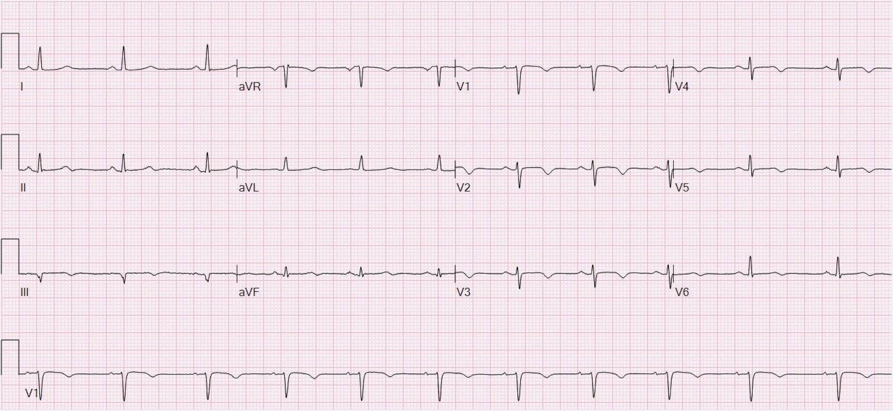
Bạn nghĩ gì?
Đây là kết quả đọc của Queen of Hearts kèm phần giải thích (explainability):

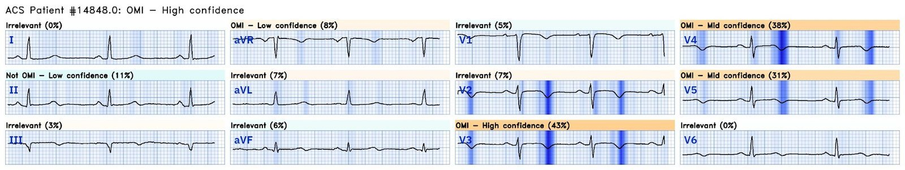
Bình luận của Smith: Khi Pendell và tôi huấn luyện phiên bản 1 của Queen, chúng tôi đã dạy cô ấy phân biệt OMI đang diễn ra hay đã tái tưới máu, cấp hay bán cấp. Với điện tâm đồ này, chúng tôi hẳn đã dạy cô ấy là “cấp, đã tái tưới máu”. Tuy nhiên, ở phiên bản 1 cô ấy chỉ báo OMI hay không OMI (và mức độ tin cậy). Vì vậy, dù đây là một điện tâm đồ rõ ràng có giá trị chẩn đoán OMI đã tái tưới máu, Queen chỉ nói “OMI — độ tin cậy cao”. Cô ấy không nêu rõ là đang diễn ra hay đã tái tưới máu.
Truy cập Queen of Hearts:

Phản ứng tức thì của tôi là tắc LAD đã tái tưới máu, nhưng điều này là đúng như dự đoán ở một bệnh nhân đã hết hoặc đang đỡ triệu chứng. Bệnh nhân kể rằng bà đang lái xe thì khởi phát đột ngột cơn đau sau xương ức, dữ dội, sắc, như dao đâm, kèm cảm giác nóng và đau ở hai tai. Bà nói các triệu chứng đến từng đợt, và cơn đau đã đỡ dần, nhưng lúc này lại hơi nặng hơn một chút. Với bệnh sử này, tôi đã kích hoạt phòng thông tim.
Trong lúc chờ ê-kíp đến, tôi khai thác thêm bệnh sử. Chỉ vài tuần trước, bà vừa biết tin một người anh chị em ruột mắc bệnh giai đoạn cuối. Dĩ nhiên đây là tin dữ đối với bà, và bà kể rằng mình đã trải qua nỗi đau buồn khủng khiếp suốt mấy tuần qua. Tôi làm siêu âm tim tại giường.
Do bà không có yếu tố nguy cơ bệnh mạch vành, cộng với việc đây là một phụ nữ 53 tuổi có bệnh sử và hình ảnh siêu âm tim phù hợp, bệnh cơ tim do stress đã vươn lên đầu danh sách chẩn đoán phân biệt của tôi. Tất nhiên, bệnh cơ tim do stress là một chẩn đoán loại trừ. Ở bệnh nhân này, với triệu chứng ngắt quãng (stuttering) và troponin đang tăng, không có lựa chọn nào khác ngoài chụp mạch vành cấp cứu. Kết quả chụp của bà được trình bày dưới đây.
Chẩn đoán cuối cùng là bóc tách động mạch vành tự phát (SCAD) bắt đầu từ LAD đoạn giữa và kéo dài về phía xa, tới chỗ động mạch vòng qua mỏm tim. Điều này được thể hiện trên một khung hình tĩnh dưới đây. Mũi tên đỏ chỉ vào một vùng hẹp đột ngột ở LAD đoạn giữa, đánh dấu điểm bắt đầu của bóc tách. Mũi tên xanh chỉ vào mỏm tim, và có thể thấy LAD vòng qua mỏm xuống phía dưới.

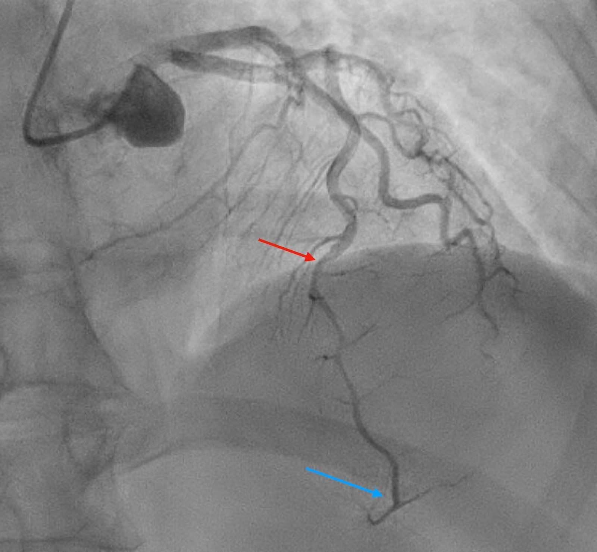
Kết quả chụp mạch hoàn toàn khớp với điện tâm đồ. Nếu bà được chụp mạch ngay lúc khởi phát triệu chứng, chúng ta hẳn đã thấy một vết bóc tách gây tắc hoàn toàn. Trong khoảng ~8 giờ xen giữa, vết bóc tách đã giảm áp và tạo ra dòng chảy TIMI 3. Điều này giải thích các sóng T tái tưới máu ở các chuyển đạo trước tim. Phần xa của LAD là phần tái tưới máu sau cùng, đó là lý do sóng T ở V6 có dạng hai pha rõ hơn so với V2, nơi sóng T đảo ngược nhiều hơn. Ta thấy LAD vòng qua mỏm tim, điều này giải thích sóng T đảo ngược ở III và aVF, và gợi ý phần cuối sóng T âm ở II.
Bản thân SCAD (per se) không có trong danh sách chẩn đoán phân biệt của tôi, nhưng nhìn lại thì lẽ ra nó phải có. Phần lớn bệnh nhân SCAD kể lại có một yếu tố gây stress về cảm xúc hoặc thể chất trước đó. Đáng tiếc là không có thử nghiệm tiến cứu nào để định hướng xử trí SCAD, nên cách xử trí tối ưu vẫn chưa rõ. Tái thông mạch đi kèm tỷ lệ thất bại cao, và phần lớn bệnh nhân tự lành khi điều trị bảo tồn. SCAD liên quan chặt chẽ với loạn sản xơ cơ (fibromuscular dysplasia) (72% bệnh nhân trong một loạt ca), và có thể ảnh hưởng đến các giường mạch khác, thường gặp nhất là động mạch thận, mạch máu não và động mạch chậu.
Saw, J., Aymong, E., Sedlak, T., Buller, C. E., Starovoytov, A., Ricci, D., Robinson, S., Vuurmans, T., Gao, M., Humphries, K., và Mancini, G. B. J. (2014). Spontaneous coronary artery dissection (Bóc tách động mạch vành tự phát). Circulation: Cardiovascular Interventions, 7(5), 645–655. https://doi.org/10.1161/circinterventions.114.001760
Bệnh nhân được điều trị bảo tồn và bắt đầu điều trị nội khoa, bao gồm nitrat, và hết triệu chứng. HsTnI đạt đỉnh 20.762 ng/L vào ngày nhập viện rồi giảm dần. Điện tâm đồ ghi lại vào sáng hôm sau được trình bày dưới đây.
Điện tâm đồ 2

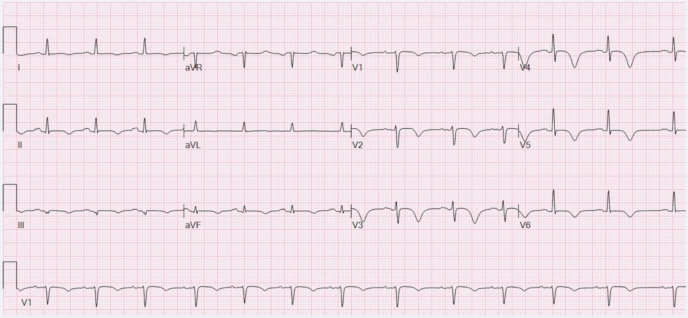
Bạn thấy những thay đổi gì?
Đây là kết quả đọc của Queen of Hearts kèm phần giải thích.

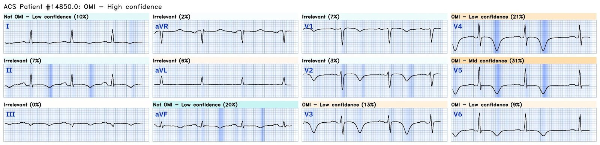
Sóng T ở các chuyển đạo trước tim giờ đây đảo ngược sâu hơn nhiều, và sóng T ở II và aVF trước đó hai pha nay đã đảo ngược. Điều này là dấu hiệu đáng yên tâm vì cho thấy tình trạng tái tưới máu được duy trì so với điện tâm đồ 1.
Vào ngày nằm viện thứ 3, bệnh nhân tái phát triệu chứng và được ghi điện tâm đồ sau.
Điện tâm đồ 3

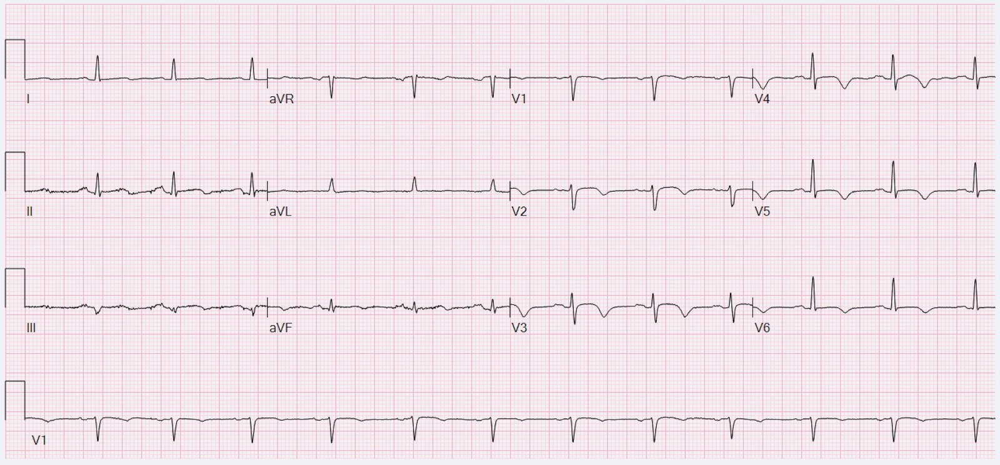
Đây là kết quả đọc của Queen of Hearts kèm phần giải thích.

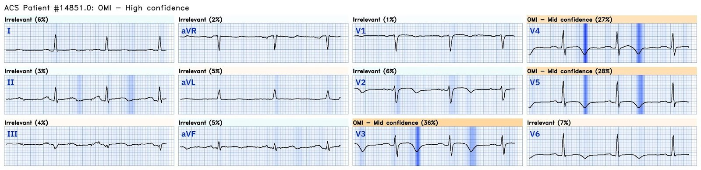
Hãy để ý rằng sóng T ở các chuyển đạo trước tim không còn sâu như trước, và đoạn ST lồi hơn một chút. Đoạn ST ở chuyển đạo III đã chuyển từ tương đối phẳng sang lồi. Sóng T ở II và aVF trước đó đảo ngược nay thành hai pha, đang trên đường trở lại dương và tối cấp. Sau khi dùng thêm nitroglycerin, triệu chứng của bệnh nhân hết, và điện tâm đồ sau được ghi.
Điện tâm đồ 4

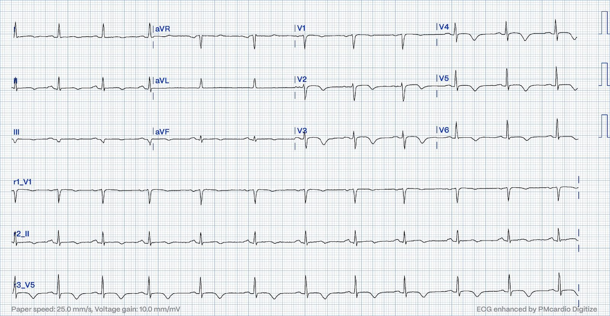
Đây là kết quả đọc của Queen of Hearts kèm phần giải thích.

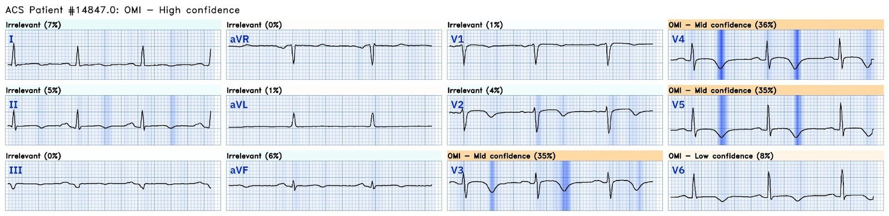
Các chuyển đạo thành dưới cho thấy hình ST dạng vòm (coving) gần như đã hết, và sóng T phần lớn lại đảo ngược. Điều này chứng tỏ thiếu máu cục bộ tái phát đã được điều trị hiệu quả. Bệnh nhân không còn triệu chứng thiếu máu cục bộ nào nữa. Đây là điện tâm đồ cuối cùng của bà trước khi ra viện.
Điện tâm đồ 5

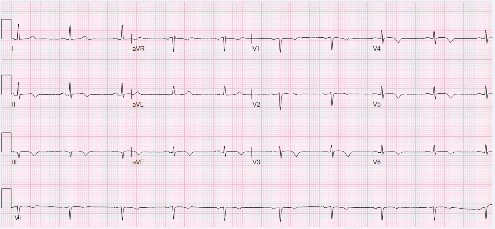
Đây là kết quả đọc của Queen of Hearts kèm phần giải thích.

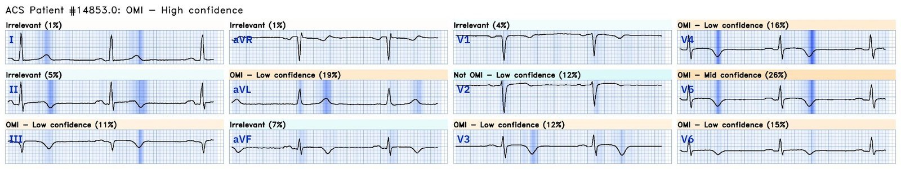
Điện tâm đồ này cho thấy đoạn ST gần như phẳng hoàn toàn, và sóng T đảo ngược sâu hơn ở thành dưới, khẳng định tình trạng tái tưới máu được duy trì kể từ điện tâm đồ trước. Bạn cũng nhận thấy sóng T dương quá mức ở I và aVL, là thay đổi soi gương (reciprocal) với sóng T ở thành dưới.
Những điểm cần học:
- Nhồi máu cơ tim típ 1 là típ mà chúng ta quen thuộc nhất: nứt vỡ mảng xơ vữa kèm tạo huyết khối hoặc khối kết tập tiểu cầu–fibrin.
- Nhưng không phải mọi OMI đều có bản chất xơ vữa. Đây là ví dụ về một bệnh nhân bị OMI do bóc tách động mạch vành. Phần lớn OMI típ 2 là do mất cân bằng cung-cầu O2 mà KHÔNG có thay đổi động (dynamic) trong động mạch vành:
- 1) giảm cung cấp O2 do (a) huyết áp thấp, đặc biệt khi có hẹp mạch vành cố định (b) thiếu oxy, (c) thiếu máu (d) các bệnh lý hemoglobin như ngộ độc CO hoặc (e) rối loạn phosphoryl hóa oxy hóa (CN hoặc HS) [(d) và (e) cũng gây tổn thương trực tiếp]
- 2) tăng nhu cầu O2: (a) nhịp nhanh (b) tăng huyết áp (hậu tải cao) (c) tăng căng giãn thành tim
- Nhưng bóc tách động mạch vành cũng được xếp vào típ 2, dù nó có thay đổi cấp tính trong cấu trúc động mạch vành, vì nó không liên quan đến nứt vỡ mảng xơ vữa.
- Việc không có yếu tố nguy cơ bệnh động mạch vành không có nghĩa là bệnh nhân không có nguy cơ bị OMI.
- Bệnh cơ tim do stress có thể giả OMI rất thuyết phục, đặc biệt là OMI LAD. Nhưng đó là một chẩn đoán loại trừ. Nếu biểu hiện của bệnh nhân gợi ý bệnh cơ tim do stress, trách nhiệm thuộc về bác sĩ điều trị phải loại trừ các nguyên nhân khác, bao gồm OMI.
- Các điện tâm đồ liên tiếp là xét nghiệm chẩn đoán có hiệu quả rất cao ở bệnh nhân đau thắt ngực ngắt quãng (stuttering). Điện tâm đồ 3 có giá trị chẩn đoán tình trạng đang tắc lại, và điện tâm đồ 4 chứng minh rằng nitrat đã làm giảm thiếu máu cục bộ.

==================================
BÌNH LUẬN CỦA TÔI, bởi KEN GRAUER, MD (7/12/2023):
==================================
Nghệ thuật so sánh điện tâm đồ liên tiếp được Tiến sĩ Frick thể hiện một cách điêu luyện trong bài hôm nay — đánh dấu lần đóng góp thứ 1 của anh cho Dr. Smith’s ECG Blog. Theo kinh nghiệm của tôi, quá thường xuyên — nghệ thuật này không được chú ý đến từng chi tiết như mức cần thiết để có được diễn giải lâm sàng tối ưu. Có ba lý do cho điều này:
- Lý do #1: Không chú ý bảo đảm rằng chúng ta đang “so sánh táo với táo, chứ không phải với cam” khi xem các bản ghi liên tiếp. Ý tôi là NẾU có khác biệt đáng kể ở hoặc trục mặt phẳng trán hoặc vị trí đặt điện cực trước tim (tức là tăng tiến sóng R) — thì thay vì thay đổi do thiếu máu cục bộ — lý do khiến hình thái sóng ST-T khác nhau có thể là kết quả của khác biệt trong kỹ thuật ghi.
- Lý do #2: Xu hướng bỏ qua việc đối chiếu tỉ mỉ với sự có mặt và mức độ nặng của triệu chứng tại thời điểm ghi từng điện tâm đồ liên tiếp.
- Lý do #3: Đơn giản là không thực hiện so sánh cẩn thận từng chuyển đạo một. Thay vào đó — có xu hướng nhìn tổng thể từng điện tâm đồ mà không so sánh chuyển đạo I ở mỗi bản ghi — rồi chuyển đạo II ở mỗi bản ghi — và cứ thế, cho từng chuyển đạo trong 12 chuyển đạo.
Tiến sĩ Frick rõ ràng đã chú ý đến từng yếu tố nêu trên, vốn thiết yếu cho diễn giải lâm sàng tối ưu, xuyên suốt 5 điện tâm đồ được ghi trong ca hôm nay.
- Để cho rõ, trong Hình 1 — tôi đã đặt cạnh nhau các chuyển đạo chi (ở TRÊN) và các chuyển đạo ngực (ở DƯỚI) của từng điện tâm đồ trong 5 điện tâm đồ hôm nay để thuận tiện cho việc so sánh này.
- THÚ NHẬN: Tôi hoàn toàn thừa nhận rằng tôi đã không nhận ra một cách tối ưu tất cả những nhận xét tinh tế nhưng có thật mà Tiến sĩ Frick mô tả khi lần đầu xem qua 5 điện tâm đồ trong ca hôm nay. Chỉ sau khi đặt từng bản ghi bên cạnh từng bản ghi khác thì tôi mới thấy rõ tất cả các dấu hiệu tinh tế nhưng quan trọng.

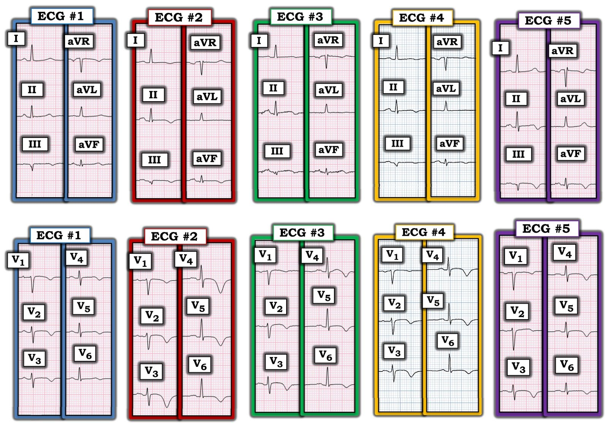
Các thay đổi sóng ST-T ghi nhận được ở Hình 1:
Để cho rõ — tôi đã chép lại các nhận xét của Tiến sĩ Frick về từng điện tâm đồ trong 5 điện tâm đồ của ca hôm nay, những điện tâm đồ mà tôi tái hiện ở Hình 1.
- Trước hết — so sánh từng chuyển đạo một giữa 5 điện tâm đồ trong ca hôm nay là hợp lệ vì: i) Không có thay đổi đáng kể nào về trục mặt phẳng trán qua 5 bản ghi này; và, ii) Hình thái QRS và tăng tiến sóng R chỉ thay đổi rất ít — nên việc so sánh từng chuyển đạo của chúng ta sẽ không bị ảnh hưởng.
Diễn giải của Tiến sĩ Frick về điện tâm đồ #1:
- Phản ứng tức thì của Tiến sĩ Frick khi nhìn thấy điện tâm đồ #1 — là “tắc LAD đã tái tưới máu”. Anh lưu ý (sau khi có dịp tìm hiểu bệnh sử) — rằng nhận định của anh về điện tâm đồ #1 là “đúng như dự đoán ở một bệnh nhân đã hết hoặc đang đỡ triệu chứng”.
- Nhưng vì lúc này triệu chứng của bệnh nhân đang quay trở lại — Tiến sĩ Frick đã kích hoạt phòng thông tim. Sau khi xem kết quả thông tim, anh nhận thấy hình ảnh chụp mạch hoàn toàn khớp với các dấu hiệu trên điện tâm đồ #1 — ở chỗ chúng ta thấy sóng T tái tưới máu ở các chuyển đạo ngực. Anh bổ sung những điểm lâm sàng sâu sắc rằng: i) Vì “phần xa của LAD là phần tái tưới máu sau cùng — sóng T ở V6 có dạng hai pha rõ hơn so với V2, nơi sóng T đảo ngược nhiều hơn” — và, ii) Phim thông tim cho thấy “LAD vòng qua mỏm tim — điều này giải thích sóng T đảo ngược ở III và aVF, và gợi ý phần cuối sóng T âm ở II”.
Diễn giải của Tiến sĩ Frick về điện tâm đồ #2:
- Điều trị nội khoa đã giúp hết triệu chứng — với điện tâm đồ #2 được ghi vào sáng hôm sau. Tiến sĩ Frick đã tinh ý nhận thấy: “Sóng T ở các chuyển đạo trước tim giờ đây đảo ngược sâu hơn nhiều — và sóng T ở II và aVF trước đó hai pha nay đã đảo ngược. Điều này là dấu hiệu đáng yên tâm, vì cho thấy tình trạng tái tưới máu được duy trì so với điện tâm đồ #1.
Diễn giải của Tiến sĩ Frick về điện tâm đồ #3:
- Đau ngực tái phát vào ngày hôm sau — dẫn đến việc ghi điện tâm đồ #3 — trên đó Tiến sĩ Frick ghi nhận: “sóng T ở các chuyển đạo trước tim không còn sâu như trước, và đoạn ST lồi hơn một chút so với điện tâm đồ #2. Đoạn ST ở chuyển đạo III đã chuyển từ tương đối phẳng sang lồi. Sóng T ở II và aVF trước đó đảo ngược nay thành hai pha, đang trên đường trở lại dương và tối cấp.”
Diễn giải của Tiến sĩ Frick về điện tâm đồ #4:
- Điện tâm đồ #4 được ghi ngay sau điện tâm đồ #3 — vì triệu chứng của bệnh nhân đã thuyên giảm với nitroglycerin. So với điện tâm đồ #3 — Tiến sĩ Frick ghi nhận rằng “các chuyển đạo thành dưới trên điện tâm đồ #4 cho thấy hình ST dạng vòm vốn có trên điện tâm đồ #3 gần như đã hết”. Thay vào đó, “sóng T thành dưới trên điện tâm đồ #4 giờ phần lớn lại đảo ngược. Điều này chứng tỏ điều trị hiệu quả đối với thiếu máu cục bộ tái phát.”
Diễn giải của Tiến sĩ Frick về điện tâm đồ #5:
- Đau ngực không tái phát trong suốt thời gian còn lại của đợt nằm viện. Điện tâm đồ #5 được ghi trước khi ra viện. Tiến sĩ Frick ghi nhận: “điện tâm đồ trước khi ra viện này cho thấy đoạn ST gần như phẳng hoàn toàn, và sóng T đảo ngược sâu hơn ở thành dưới — điều này khẳng định tình trạng tái tưới máu được duy trì kể từ điện tâm đồ #4.” Tiến sĩ Frick lưu ý rằng một dấu hiệu bổ sung của tái tưới máu thành dưới là “sóng T dương quá mức ở I và aVL — là thay đổi soi gương với sóng T đảo ngược ở thành dưới.”
Kết luận:
Chúng tôi xin CẢM ƠN Tiến sĩ Frick vì bài trình bày chi tiết và vô cùng sâu sắc. GHI NHẬN anh vì đã đối chiếu điêu luyện các diễn biến lâm sàng với từng điện tâm đồ — qua đó củng cố vững chắc lời giải thích của anh về việc điều trị thành công mà bệnh nhân bị OMI LAD đang tiến triển này đã nhận được.
- CÂU HỎI: Chẳng phải là DỄ HƠN biết bao khi có so sánh từng chuyển đạo một nhờ Hình 1 — để thấy được diễn tiến tinh tế nhưng quan trọng của các thay đổi sóng ST-T, vốn tương ứng rất sát với các diễn biến lâm sàng hay sao?